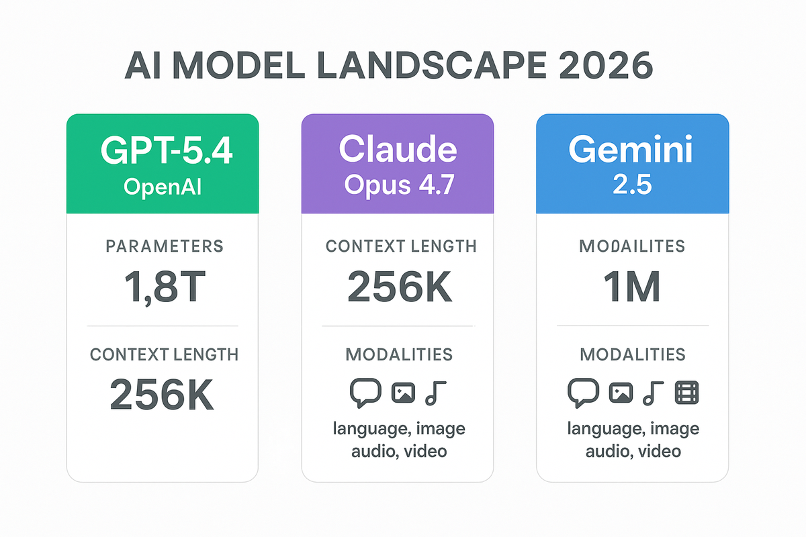

AI가 바꾸는 연구개발 AI Transforming R&D
지금 우리가 할 수 있는 것 What We Can Do Right Now
AI 최신 동향 — 임원이 알아야 할 빅픽처 AI Trends — The Big Picture for Executives
15분 | AI는 이미 사람을 넘었다 — 일부 영역에서. 2026년 현재 상황을 숫자로 봅니다. 15 min | AI has surpassed humans — in some areas. Let's look at 2026 by the numbers.

GPT-5.4
OSWorld-V 벤치마크 인간 기준선 초과. 100만 토큰 컨텍스트. 코딩·추론·지식 업무를 하나의 모델이 동시 수행. Exceeds human baseline on OSWorld-V. 1M token context. Single model handles coding, reasoning, and knowledge work simultaneously.
Claude Opus 4.7
장기 추론 + 복잡한 도구 연계 최강. GitHub Copilot 내장. 에이전트 코딩에 특화. Best at long-horizon reasoning + complex tool workflows. Built into GitHub Copilot. Specialized for agentic coding.
기업 도입률 Enterprise Adoption
Fortune 500 기업 72%가 AI 에이전트 도입 중 또는 시범 운영. OpenAI Enterprise 매출 비중 40%. 72% of Fortune 500 have AI agents in production or pilot. OpenAI Enterprise now 40% of revenue.
Novo Nordisk × OpenAI
신약 발견 → 임상 → 제조 → 공급망 → 상업 운영까지 전 밸류체인 AI 통합. 2026년 말 완료 목표. Drug discovery → clinical trials → manufacturing → supply chain → commercial ops. Full AI integration by end of 2026.

"완벽한 AGI까지 불과 몇 년. 게임 프로토타입이 6개월 → 1~2시간. 2026~2027이 특이점의 시작으로 기억될 것." "Perfect AGI is just years away. Game prototypes went from 6 months to 1-2 hours. 2026-2027 will be remembered as the start of the singularity."
"LLM은 본질적으로 안전하지 않다. 코딩처럼 검증 가능한 영역에서는 성과를 인정하지만, 현실 문제는 그렇지 않다. 구조적 제어 장치가 없다." "LLMs are fundamentally unsafe. They perform in verifiable domains like coding, but not in real-world problems. There is no structural control mechanism."
"소수의 연구소만 최전선에 있다. AI가 재귀적으로 자기를 개선하는 단계에 도달하면, 과거 사이버 보안과 비교 불가능한 영향력." "Only a few labs are at the frontier. When AI reaches recursive self-improvement, the impact will be incomparable to past cybersecurity changes."

한 달간 키보드·마우스·스크린샷 기록 → AI 학습 데이터로 활용 → 동시 해고. 화이트칼라 중간층이 가장 먼저 타격. One month of keyboard, mouse, screenshot monitoring → used as AI training data → simultaneous layoffs. White-collar middle tier hit first.
AI가 다 해준다고 하는데, 실은 AI가 틀리는 걸 잡아주는 사람이 필요하다. 도메인 지식 + AI 활용 능력 = 핵심 역량. AI does everything they say, but someone who catches AI's mistakes is needed. Domain knowledge + AI skills = core competency.
사내에서 바로 쓸 수 있는 것 What You Can Use Right Now — In-House
15분 | GPT Enterprise와 GitHub Copilot — 이미 우리 회사에 있는 무기. 15 min | GPT Enterprise and GitHub Copilot — weapons already in your company.

GPT Enterprise
✅ 데이터가 OpenAI 학습에 사용되지 않음
✅ SOC 2 준수, SSO, 관리자 콘솔
✅ Workspace Agents: Slack, Gmail 연동
✅ 팀 단위 에이전트 빌드 + 공유
✅ Data never used for OpenAI training
✅ SOC 2 compliant, SSO, admin console
✅ Workspace Agents: Slack, Gmail integration
✅ Team-level agent building + sharing
GitHub Copilot
✅ Claude Opus 4.7 / Sonnet 4.6 내장
✅ 코드 자동완성, 리뷰, 테스트 생성
✅ 에이전트 모드: 자율 버그 수정 + PR
✅ Enterprise 정책 관리
✅ Claude Opus 4.7 / Sonnet 4.6 built-in
✅ Auto-complete, review, test generation
✅ Agent mode: autonomous bug fix + PR
✅ Enterprise policy management
🔧 연구소에서 바로 쓸 수 있는 5가지 🔧 5 Immediate Use Cases for R&D
보고서 초안Report Drafting
실험 데이터 + 프롬프트 → 보고서 자동 생성. 반나절 → 15분.Experiment data + prompt → auto report. Half day → 15 min.
논문/특허 분석Paper/Patent Analysis
PDF 업로드 → 핵심 요약 + 경쟁사 동향. 2시간 → 10분.PDF upload → key summary + competitor trends. 2 hours → 10 min.
시뮬레이션 코드Simulation Code
자연어로 설명 → Python/R 코드 자동 생성. 일주일 → 1시간.Natural language → auto Python/R code. 1 week → 1 hour.
회의록 정리Meeting Minutes
녹취 텍스트 → 액션 아이템 + 요약 + 후속 일정.Transcript → action items + summary + follow-ups.
기술 번역/리뷰Tech Translation
일본/중국 특허 번역, 논문 영작 교정, 기술 용어 통일.JP/CN patent translation, paper proofreading, terminology standardization.

🎯 프롬프트 엔지니어링 — 3단계 전략 🎯 Prompt Engineering — 3-Phase Strategy
뼈대Skeleton
구조/UI/포맷 정의Structure/UI/Format
두뇌Brain
수식/로직/분석Math/Logic/Analysis
피부Skin
시각화/리포트/고도화Visualization/Report
OLED 공진 시뮬레이터: 3단계 프롬프트로 40분 만에 완성. Warpage 시뮬레이터: 동일 방법으로 40분 완성. AI가 Snell's law를 빠뜨렸지만, 도메인 전문가가 잡아냄 → "AI가 틀린 걸 잡아주는 사람"이 핵심. OLED resonance simulator: built in 40 min with 3-phase prompts. Warpage simulator: same method, 40 min. AI missed Snell's law, but domain expert caught it → "The person who catches AI's mistakes" is the key.
라이브 데모 — GPT Enterprise 실시간 시연 Live Demo — GPT Enterprise in Action
20분 | 사내 GPT Enterprise에서 실행. 사외 접속 불필요. 20 min | Runs on internal GPT Enterprise. No external access needed.

"OLED 탠덤 구조에서 시야각 색변화 원인과 해결 방안을 A4 2페이지 보고서로 정리해줘. 배경, 원인(Fabry-Perot 공진), 해결방안(RGB 차등 ITO), 참고문헌 포함." "Write a 2-page A4 report on OLED tandem viewing angle color shift causes and solutions. Include background, causes (Fabry-Perot resonance), solutions (RGB differential ITO), and references."
⏱️ 기존 반나절 → 15분 (초안 5분 + 검토 10분) ⏱️ Previously half day → 15 min (5 min draft + 10 min review)
"다층 박막(Si 500μm/Cu 50μm/PI 25μm)의 열응력과 Warpage를 계산하는 Python 코드를 만들어줘. ΔT=150°C, 중립축/곡률/최대변위 계산. Plotly로 3D 시각화." "Create Python code to calculate thermal stress and warpage for multi-layer thin film (Si 500μm/Cu 50μm/PI 25μm). ΔT=150°C, neutral axis/curvature/max displacement. Plotly 3D visualization."
⏱️ 기존 일주일 → 1시간 (생성 10분 + 검증 50분) ⏱️ Previously 1 week → 1 hour (10 min generation + 50 min verification)
"[특허 초록 붙여넣기] 이 특허의 핵심 청구항, 우리 기술과의 차이점, 회피 설계 방향을 분석해줘." "[Paste patent abstract] Analyze the core claims, differences from our technology, and design-around directions."
⏱️ 기존 2시간 → 10분 ⏱️ Previously 2 hours → 10 min
정리 + 다음 단계 Summary + Next Steps
10분 | 핵심 3가지 + 실행 로드맵 + Q&A 10 min | 3 Key Takeaways + Action Roadmap + Q&A
AI는 이미 사람을 넘었다AI Already Exceeds Humans
GPT-5.4 벤치마크 인간 초과, 72% 기업 도입. 하지만 르쿤 경고: 현실 문제의 검증은 아직 사람 몫.GPT-5.4 exceeds human benchmarks, 72% enterprise adoption. But LeCun warns: real-world verification is still human's job.
우리 회사에 이미 도구가 있다We Already Have the Tools
GPT Enterprise + GitHub Copilot. 보고서, 코드, 특허분석, 회의록 — 오늘부터 쓸 수 있음.GPT Enterprise + GitHub Copilot. Reports, code, patents, meeting minutes — start using today.
쓰는 사람 vs 대체되는 사람Users vs Replaced
메타 8,000명 해고가 현실. "AI가 틀린 걸 잡아주는 도메인 전문가"가 살아남음.Meta's 8,000 layoffs are real. "Domain experts who catch AI's mistakes" survive.

Quick Wins
- 팀별 GPT Enterprise 활용 사례 1건1 GPT Enterprise use case per team
- GitHub Copilot으로 반복 코드 자동화Automate repetitive code with Copilot
- 주간 회의록 AI 정리 시범Pilot AI meeting minutes weekly
Workspace Agents
- 팀 자동화 파이프라인 구축Build team automation pipelines
- 주간 보고서/데이터 분석 자동화Automate weekly reports & data analysis
- 사내 지식베이스 AI 검색AI-powered internal knowledge search
R&D AI Agent
- 실험 설계 → 데이터 수집 → 분석 → 보고서 자동화Experiment design → data → analysis → report automation
- R&D 전용 AI 에이전트 구축Build R&D-specific AI agents
- AI-human 협업 프로세스 표준화Standardize AI-human collaboration
❓ 예상 Q&A ❓ Expected Q&A
→ Enterprise는 학습에 사용 안 함, SOC 2 준수, SSO 연동→ Enterprise data never used for training, SOC 2 compliant, SSO integration
→ 자연어 프롬프트로 충분. 3단계 전략 따르면 시뮬레이터도 만들 수 있음→ Natural language prompts are sufficient. Follow the 3-phase strategy to build simulators
→ GPT-5.5에서 50% 감소. 그래도 검증 필수 — 도메인 전문가의 역할→ 50% reduction in GPT-5.5. Still needs verification — domain expert's role
→ 보고서 반나절→15분, 특허분석 2시간→10분, 코드 일주일→1시간→ Reports: half day→15min, Patents: 2hrs→10min, Code: 1week→1hr